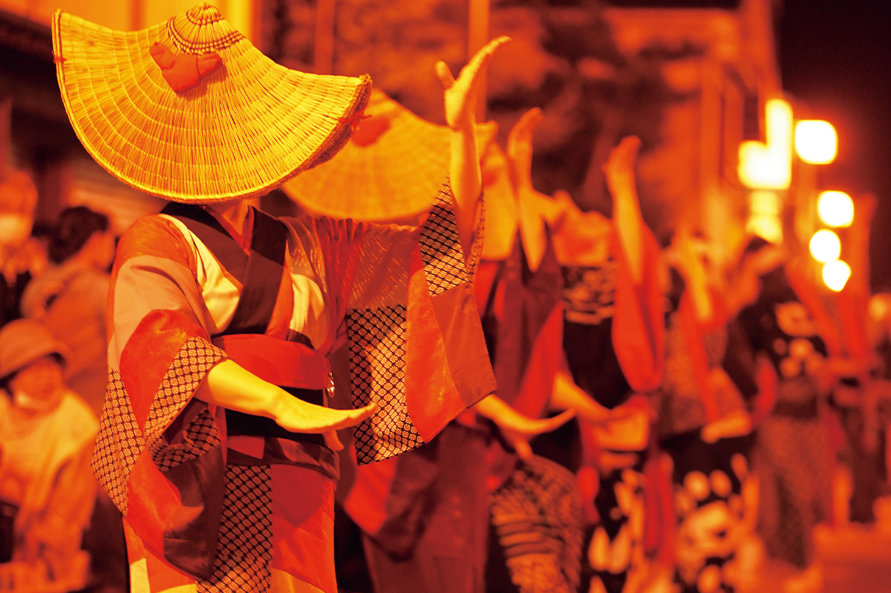
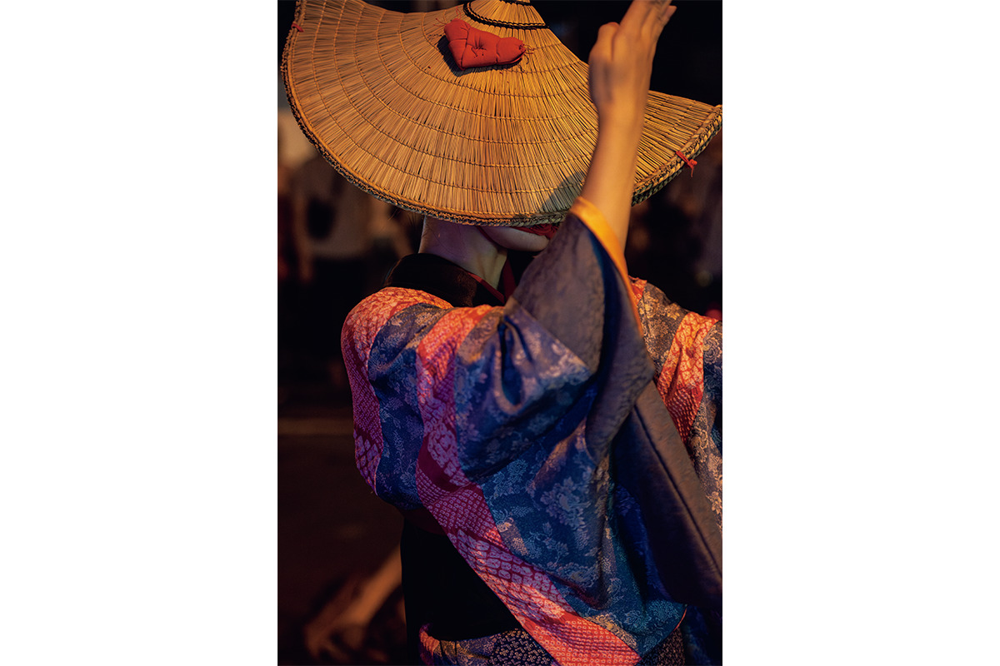
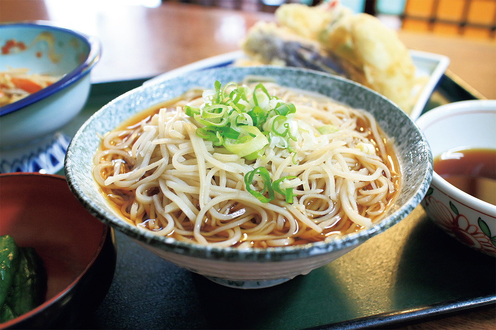

Префектура Акита · Уго · фестиваль
Танец Бон в Нисимонаи: капюшоны, соломенные шляпы и костры августовской ночи

Каждый август в городке Уго на юге префектуры Акита при свете костров танцуют мужчины и женщины, чьих лиц не видно. Танец Бон в Нисимонаи считают одним из трёх великих танцев Бон в Японии.
Фестиваль
Столичная культура в северном городке
Нисимонаи относится к городку Уго на юге префектуры Акита. Танец Бон, который исполняют здесь летними ночами, называют одним из трёх великих танцев Бон страны. Мужчины и женщины в плетёных шляпах и капюшонах медленно движутся в неровном свете костров, и в этой картине есть что-то загадочное. Негромкая музыка и плавный танец так красивы, что у зрителей перехватывает дыхание.
У танца два вида движений. «Ондо» отличается изящными движениями с плавными подъёмами и спадами. В «ганкэ» есть движение, которое, как говорят, означает круговорот перерождений.

Когда-то Нисимонаи был связан с Киото и Осакой торговыми судами китамаэбунэ, ходившими вдоль побережья Японского моря. Культура столицы смешалась здесь с местными обычаями, и так сложился свой, ни на что не похожий танец. Смотреть его лучше, зная историю этого места.
Костюмы
Лоскутные кимоно и спрятанные лица
Знаток японских праздников и народных искусств, рассказавший об этом фестивале, особо отмечает красоту нарядов. Капюшон «хикоса-дзукин» оставляет открытыми только глаза. Кимоно «хануй» сшито из множества разных лоскутов. Плетёная шляпа «амигаса» закрывает лицо, а лёгкие хлопковые кимоно юката окрашены в яркий индиго.
Тем, кто хочет узнать больше, стоит зайти в Дом танца Бон в Нисимонаи: там выставлены костюмы, которым больше ста лет.
Еда
Соба Нисимонаи
С давних времён в Нисимонаи одна за другой стоят лавки лапши соба, и в 2024 году туристы по-прежнему их любили. Лапшу здесь делают в основном упругую: при замесе в неё добавляют водоросли фунори. Особенность Нисимонаи в «хиягакэ»: соба заливают холодным бульоном даже зимой. Список заведений, где подают такую соба, опубликован на сайте Ассоциации туризма и местных продуктов городка Уго.

Танец Бон в Нисимонаи
- Даты
- ежегодно 16–18 августа (в 2026 году с 16 по 18 августа)
- Адрес
- префектура Акита, уезд Огати, Уго, Нисимонаи, улица Хоммати
- Как добраться
- от станции JR Юдзава около 15 минут на машине или такси; на машине около 15 минут от съезда Юдзава скоростной дороги Тохоку-Тюо